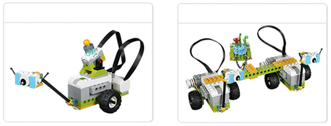

프로젝트 개요
프로젝트의 이번 섹션에서는 특별한 식물 표본의 존재를 감지하기 위한 용도로 사용할 수 있는 동작 센서를 학생들에게 소개할 것입니다.
프로젝트 유형
이 시작하기 프로젝트는 교사와 학생들에게 WeDo 2.0 프로젝트의 여러 가지 요소를 추가로 소개하기 위한 목적으로 구상되었습니다.
-
동작 센서를 사용하는 방법 탐구
-
캡처 도구를 이용한 비디오 기록
소요 시간
약 20분
다음 단계
과학 탐사 차량 마일로 파트 C와 D를 살펴보십시오.
